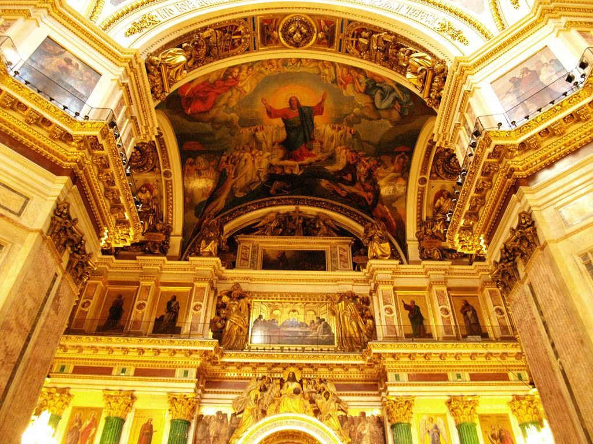
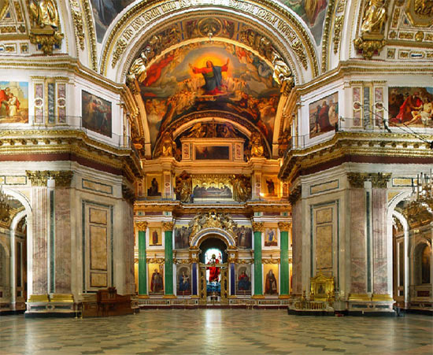
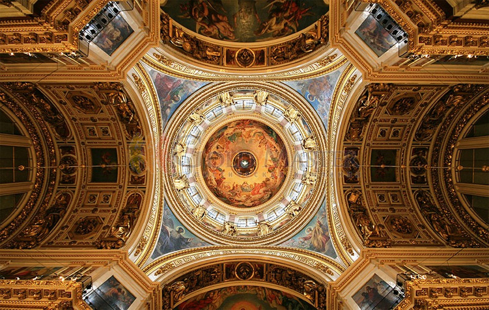
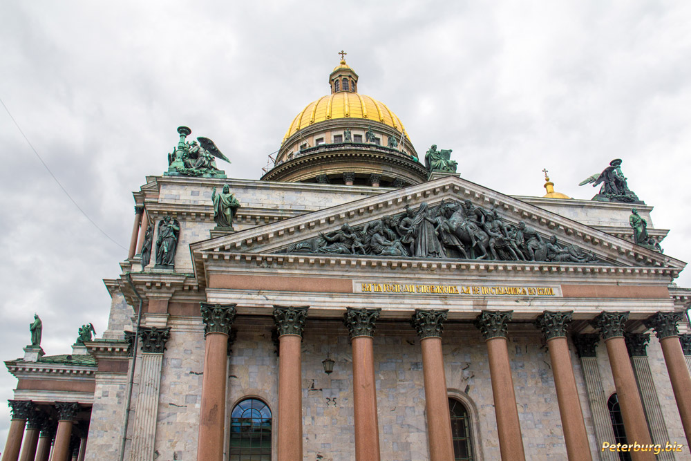
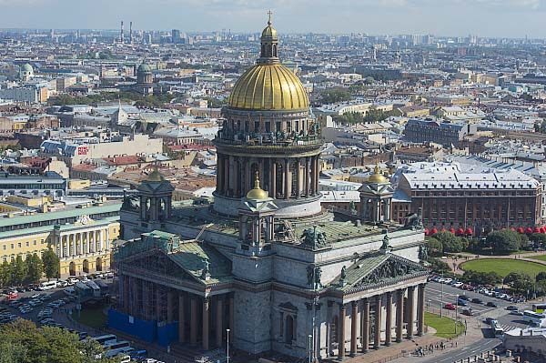
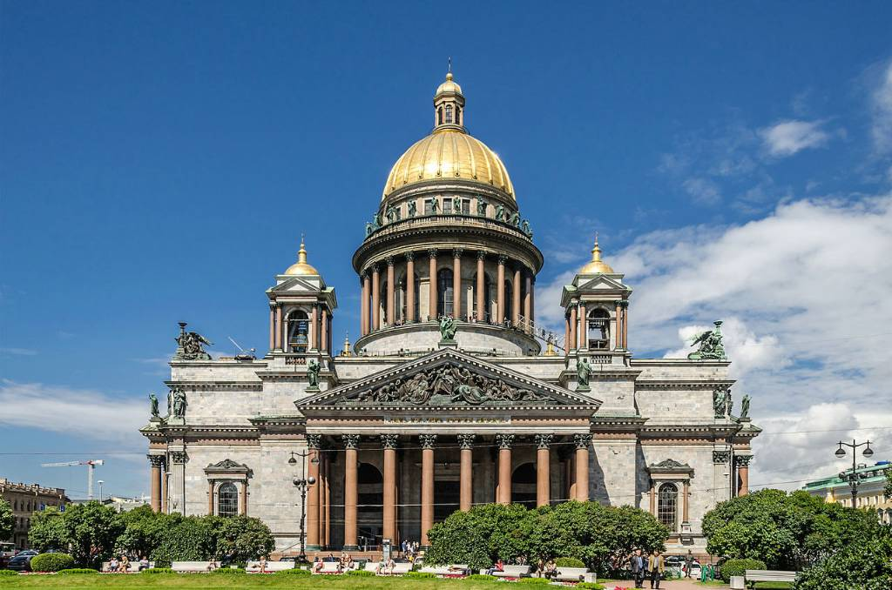

Исаакиевский собор.
Описание
-
Исаакиевский собор.
Исаакиевский собор — крупнейший на сегодняшний день православный храма Санкт-Петербурга и одно из высочайших купольных сооружений в мире. Его история началась в 1710 г., когда была построена деревянная церковь в честь Исаакия Далматского — византийского святого, на день памяти которого приходится день рождения Петра Великого. В ней в 1712 г. Петр обвенчался с Екатериной Алексеевной, своей второй супругой. Позже деревянную церковь заменили каменной. Третий храм был возведен во второй половине 18 в., однако сразу по окончании работ его объявили несоответствующим парадной застройке центра города. Император Александр I объявил конкурс на лучший проект по его перестройке. Через 9 лет получил одобрение проект молодого французского архитектора Огюста Монферрана, и началась работа.
Сооружение собора длилось 40 лет и потребовало приложить огромное количество усилий. Однако результат превзошел все ожидания. Монументальность собора подчеркнута его квадратным построением. При строительстве было использовано 43 породы минералов. Цоколь облицован гранитом, а стены — серыми мраморными блоками толщиной около 40-50 см. С четырех сторон Исаакиевский собор обрамляют могучие восьмиколонные портики, украшенные статуями и барельефами. Над громадой собора высится грандиозных размеров золоченый купол на барабане, окруженном гранитными колоннами. Сам купол сделан из металла, а на его позолоту ушло около 100 кг червонного золота.
Исаакиевский собор иногда называют музеем цветного камня. Внутренние стены облицованы белым мрамором с отделочным панно из зеленого и желтого мрамора, яшмы и порфира. Главный купол изнутри расписывал Карл Брюллов, также над внутренним убранство храма работали Василий Шебуев, Федора Бруни, Иван Витали и многие другие известные художники и скульпторы.
Высота собора 101,5 м, в храме могут одновременно находиться 12 000 человек. Однако сам архитектор Монферран считал, что собор рассчитан на 7000 человек, учитывая пышные юбки дам, каждой из которых нужно не менее 1 кв. м. пространства.
После революции храм был разорен, из него вынесли около 45 кг золота и более 2 т серебра. В 1928 г. службы были прекращены, и здесь открылся один из первых антирелигиозных соборов в стране. В годы Великой Отечественной войны подвалы храма служили хранилищем для произведений искусства, которые везли сюда со всех дворцов и музеев. Для маскировки купол перекрасили в серый цвет, но избежать бомбежек все же не удалось — по сей день на стенах и колоннах храма видны следы артобстрела. По самому куполу не стреляли, согласно легенде, немцы использовали его как ориентир на местности.
Музейный статус был присвоен храму в 1948 г., а церковные службы по воскресениям и праздникам возобновлены в 1990 г., и эта традиция жива по сей день. Кроме того, в соборе регулярно проходят концерты, экскурсии и другие мероприятия
-
Колоннада Исаакиевского собора
Колоннада Исаакиевского собора стоит отдельного внимания. Это самая известная смотровая площадка Санкт-Петербурга. С высоты 43 м открываются виды на Неву и центральные районы города. Особенно красиво здесь в белые ночи — есть что-то мистическое в этом призрачном свете. Подняться на колоннаду можно только пешком по винтовой лестнице.
Строительство колоннады началось в 1837 г., сразу после того, как был возведен купол. Храм строился по технологиям начала 19 в., гранитные монолитные блоки доставлялись с Финского залива, и для подъема их на высоту был построен специальный механизм. В основном же строительство велось вручную крепостными рабочими.
-
Практическая информация
Адрес: Исаакиевская площадь, 4.
Время работы: с 10:00 до 17:30.
Вход: 250 RUB (вход в музей), 150 RUB (вход на колоннаду, включена аудиоэкскурсия).
Галерея:
- 

- 
- 